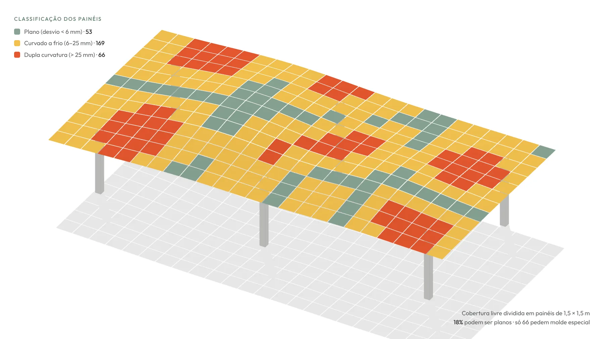
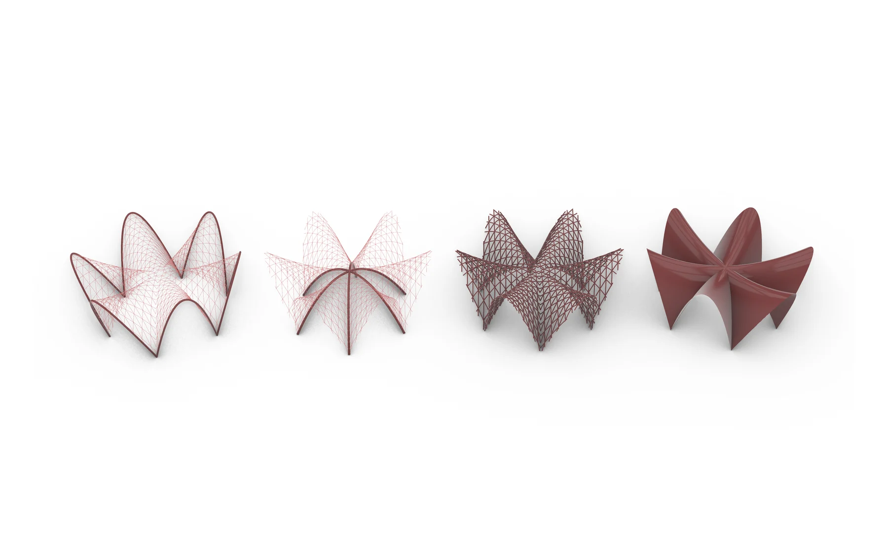
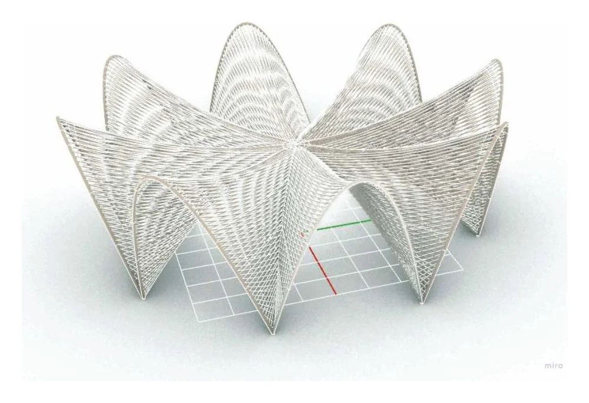
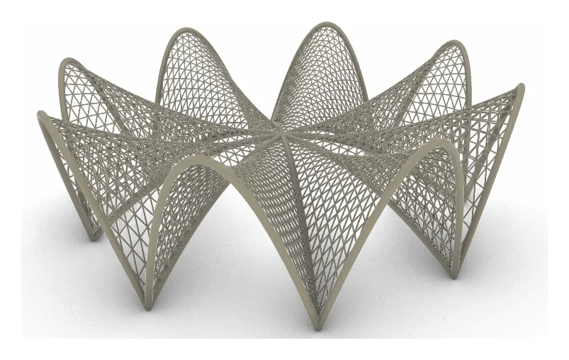

Complex geometry rationalization
Free forms that can be built.
Parametric structures and surface rationalization so the intended form fits the budget and the fabricator's capacity, with as few part types as possible.
Six lines of work.
Each area can be hired on its own or combined with the others.
Parametric structures
Roofs, frames and grids defined by rules, easy to adjust until the end of the project.
Surface rationalization
Planar, cold-bent and moulded panels sorted, with the cost of each family.
Cladding and part families
Cladding layouts and parts grouped to repeat as much as possible.
Form-finding and gridshells
Form-finding with Kangaroo and preliminary structural checks with Karamba3D.
Parametric façades
Shading, screens and skins with performance-driven variation.
Construction documents and technical detailing
Construction drawings, details and IFC/Revit models coordinated with structure and MEP.
Examples.
Images produced by BRD. Those marked BRD project come from real projects; those marked Research come from the team's research work; the others use illustrative models.




Want to apply this to your project?
Send us what you have, even if it's just an idea or a study file. We'll reply with a scope proposal.